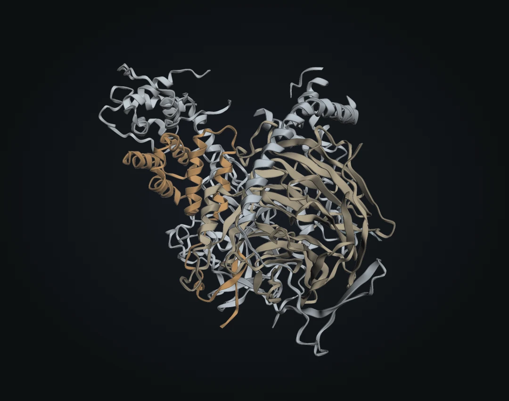

产业合作
蛋白原料与研发服务
面向工业用酶、重组胶原蛋白等应用领域。
了解粒影生物 ↗张影 · 结构生物学研究者 · 粒影生物
90°
加热测试Tri-helix 三螺旋重组胶原
粒影 Tri-helix 三螺旋重组胶原。加热到 90°C 再降回常温，它会重新绕回来。
认识张影
华中农业大学毕业，放弃保研，赴英求学。
获诺丁汉大学硕士优异成绩，随后赴牛津工作。
攻读博士，研究蛋白质的结构与功能。
任高级研究科学家。据本人自述，同年获英国永居。
回国任副研究员。
在深圳开启蛋白质研发与产业化探索。

代表研究
2016 年，张影参与解析 PRC2，研究脑肿瘤相关的 H3K27M 突变如何抑制这个复合物。

作品与数据
2026 年 11 月 20 日公开数据，逐条核对累计互动。列表按所选指标排列，显示前五条。
几点想法
从科普内容、人物经历到研发现场，看完这个号的几点想法。
合作与联系
技术与产业合作、媒体采访及科学传播，欢迎通过粒影生物公开渠道联系。